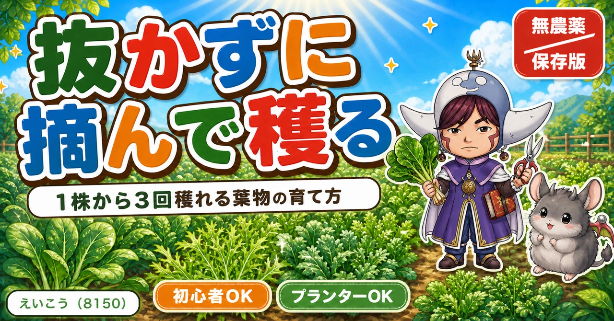
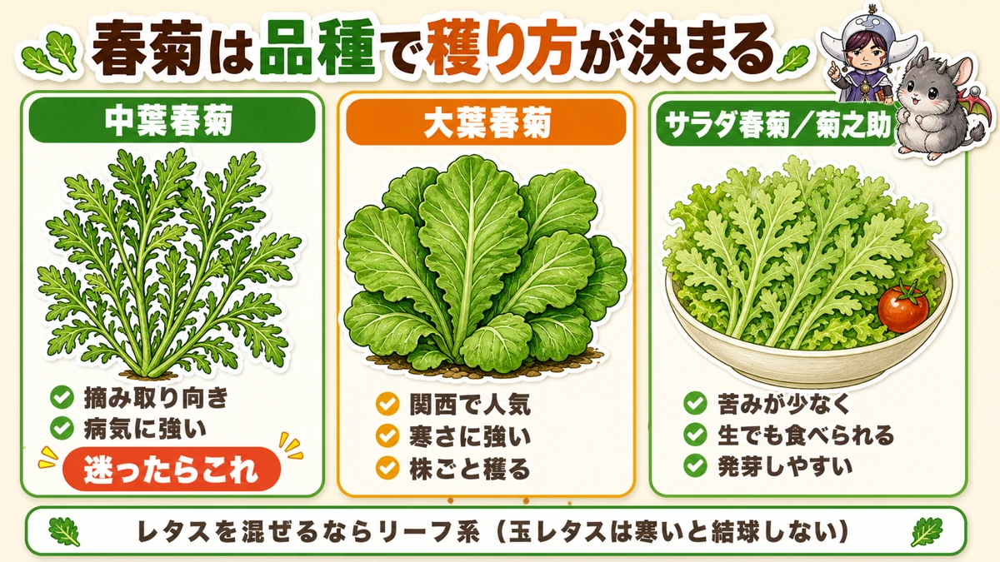
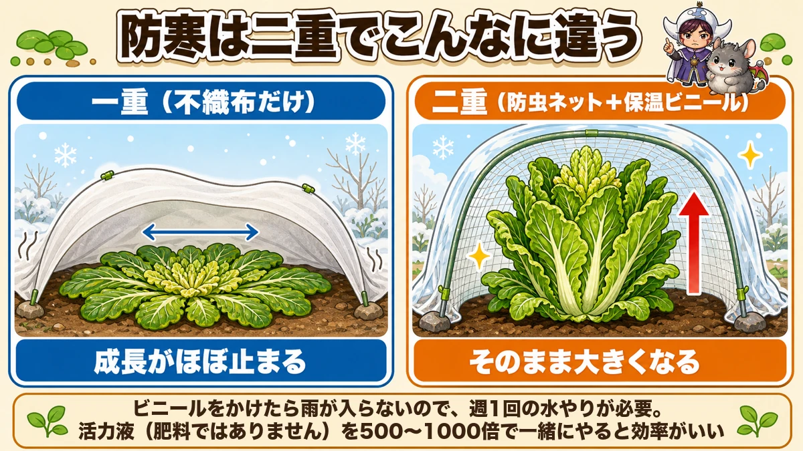
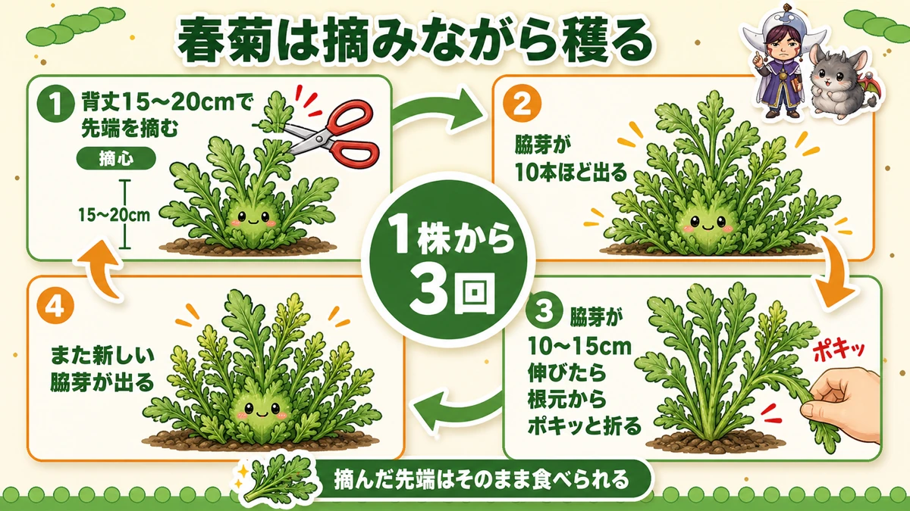
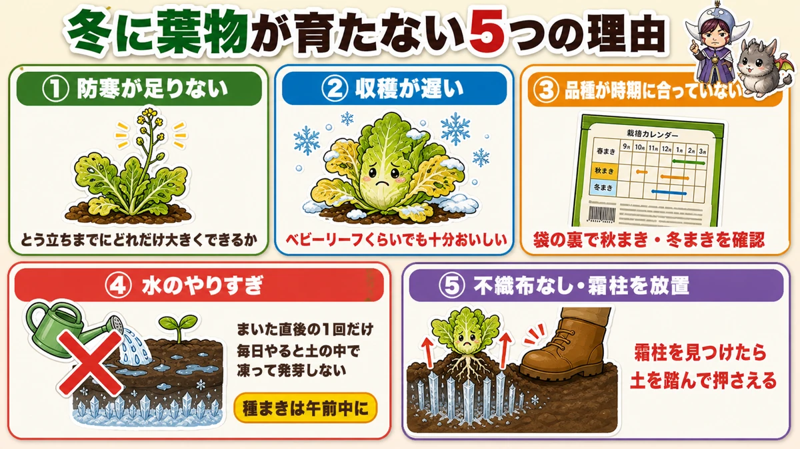

秋の葉物の育て方｜種まき・摘み取り・冬の不調を判断する

📖 この記事の目次
この記事で分かること
- 秋の葉物は、食べたい量と収穫方法を決めてから、作物・品種・まき時を選びます。
- 小松菜や水菜の外葉を取る方法と、春菊の脇芽を育てる方法は、残す場所が違います。
- 冬へ向かうほど収穫までの時間は長くなります。秋の収穫日数を冬まきに当てはめません。
- 芽が出ないときは、種袋の適期、土の冷え、乾燥、過湿を順に調べます。
- 水や肥料の追加は、覆いの有無と土の履歴を見て判断。葉が小さいだけでは決めません。
- 保温して育て続ける、若い葉で収穫する、株ごと片づける。その選択を株の状態から考えます。
「小松菜は簡単って聞いたのに、なんか小さいままやな」。そんなとき、いきなり肥料を買い足す前に見たいことがあります。まいた時期と、株が育っている場所です。同じ葉物でも、暖かい秋の畑と、冷たい冬のプランターでは、次にする作業が違います。
このページでは、小松菜・水菜・春菊を中心に、ほうれん草やリーフレタスも交えて秋冬の段取りを整理します。8150（えいこう）です🌱 私は理科を教えていて、野菜の形が変わる理由を実物で考えるのが好きです。ここでも、数字を暗記するより『今日の株を見て、どう動くか』を大事にしたいと思います。
これから種を買うみなさんは早見と手順へ。すでに育てていて困っているなら、症状の章へ進んでください。説明が違って迷ったときのために、条件の違いを比べる章も用意しました。必要な場所に戻れる記事として使ってもらえたらうれしいです☺️
早見：秋の葉物の育て方（ひと目で分かる数字）
日程・大きさ・土の目安
- 対象の分け方：小松菜・水菜・チンゲンサイはアブラナ科、春菊・レタスはキク科です。同じ『葉物』でも、前作との組み合わせや収穫の仕方は別に考えます。
- 秋のまき時：中間地を中心に9〜10月から始める説明があります。11月まで始められる説明もありますが、防寒や作物選びを伴います。全国一律の締め切りではありません。
- 地域差：寒くなるのが早い地域は、冬の前に育てられる期間を確認します。暖かい地域でも、残暑のある9月と冷え込む11月を同じ管理にしません。手元の種袋の地域別カレンダーを優先してください。
- 植え付け：小松菜などは栽培する場所へ直接種をまく方法が使えます。レタスは苗を使う選択肢もあります。種からの日数と、育った苗からの日数を分けて見ます。
- 小松菜のまき方：プランターの実演では、約1cmの溝に約1cm間隔で種を置く例があります。この数字を春菊やレタスのまき方へそのまま移しません。
- 株間：筋まきの間引きでは約5cm間隔にする説明があります。一方、冬は株を残し、大きいものから収穫する説明もあります。作物・収穫サイズ・季節によって違い、全品目共通の最終株間ではありません。
- うね幅：材料には共通の指定値がありません。栽培する列と、覆いを開けて手を入れる場所を先に決めます。春菊が枝を広げる場所を、小さな葉だけを収穫する場所と同じ密度にしないことが大切です。
- 収穫まで：10月の小松菜・チンゲンサイなどでは45〜60日程度、プランターでは約2か月という説明があります。11月にまいて2月に収穫する例もあり、寒さが進むと日数が変わります。
- 発芽を待つ期間：10月の小松菜などで約4日を確認の区切りにする説明があります。ただし、冷えた土や別の作物にも共通する期限ではありません。袋の発芽条件と合わせて見ます。
- 春菊の摘心：背丈15〜20cmほどが目安として示されています。摘心は、上へ伸びる先端を切って枝の芽を育てる作業です。株全体を地際から刈ることとは違います。
- 春菊の脇芽収穫：10〜15cm程度に伸びた部分を取る例があります。枝が出る場所と次の芽を確かめてから切り、収穫後も育つ部分を残します。
- 元肥：前作で肥料を使った冬の畑では追加せずに始める説明、肥料のない場所では準備してから始める説明があります。『葉物だから全部不要』とは決めません。
- 追肥の時期：継続収穫するロメインレタスでは、収穫後に1回施す例があります。短期で収穫する小松菜の計画と区別し、使う肥料の表示と土の状態を確認します。
- 連作の間隔：材料だけでは、一律の年数を決められません。前作の科と病気の履歴を確認し、同じ科を続ける配置を避ける計画を立てます。野菜の名前が違っても科が同じことがあります。
『何日で食べられるか』を決める前に
まず『小さくても早めに食べる』『一度に束で収穫する』『必要な分を何回か摘む』から選びます。小松菜を若い葉で食べる予定と、春菊の枝を伸ばして繰り返し取る予定では、待つ時間も必要な場所も違います。
45〜60日という数字だけで年内収穫の日を決めると、冷え込みで予定がずれることがあります。日数は作業を思い出す目安にして、最後は葉の大きさと傷みを見てください。小さな葉を収穫するなら、その大きさでも目的を果たせます。売り場の束と同じ見た目になるまで待たなくてもええんですよね。
冬の種まきも、秋にまいた株の冬越しも、見た目は同じ葉物栽培です。でも前者はこれから発芽させるところ、後者はすでに根と葉ができているところ。この差を日程に入れると、『冬に育つ』という説明を読み違えにくくなります。
種袋からメモする項目
- 野菜名だけでなく、品種名も書く
- 自分の地域でまける期間を確認する
- 種まきの深さと、最終的な株間を分けて記録する
- 収穫の目安が種まき起点か、植え付け起点かを確かめる
- まいた日と、覆いを掛けた日を残す
畑で覚える項目を増やすより、袋を取っておく方がラクです。袋の写真と種まきの日付があれば、後から『この時期に向く品種やったかな』と戻れます。特に数種類を一緒にまくときは、場所にも名前を付けてください。芽が小さいうちは、葉の形だけで見分けようとすると、なんか急にクイズ大会になります(笑)。
作業の手順（時期の順）
1．使いたい量と収穫方法から種を選ぶ
- 料理で少量ずつ使うのか、一度に収穫して場所を空けるのかを決めます。
- 小松菜・水菜・春菊などから、食べたい作物を選びます。
- その作物の中で、まく季節と収穫方法に合う品種を探します。
- 種袋の適期を確認し、冬に入るまでの予定を立てます。
繰り返し収穫をしたいなら、『再生するらしい』より先に、どこを残す方法なのかを確認してください。小松菜の外葉を摘むことと、春菊の先端を摘むことは、どちらも一部を取る作業ですが、植物にとっては違う出来事です。
春菊には、脇芽を使った摘み取りに向くタイプと、株全体の収穫を基本にするタイプがあります。品種を選ぶ段階で、この違いを見ます。香りの強さや葉の形も好みが分かれるので、長く取れるかだけで選ばなくてOKです。食べたい春菊を育てることも大事ですからね。

この図は選択肢をつかむ入口に使い、購入するときは実際の袋の説明と照らし合わせます。『摘み取り向き』『株ごと収穫』といった表示を見てください。発芽しやすいと紹介される系統があっても、特定の品種なら必ずそろうとまでは考えません。
レタスを一緒に育てるなら、葉を順に収穫できるリーフ系が候補です。丸い玉を作ることを目標にするレタスとは、完成とみなす形が違います。小さな畑でいろいろ食べたいときも、すべてを同じ日・同じ大きさで収穫する計画にしなくてよいんですよね。
2．前作と水はけを確かめる
- その場所で直前に何を育て、どんな肥料を使ったかを確認します。
- 前作と今回の野菜が同じ科かを調べます。
- 雨の後に土が長く濡れたままになる場所と、水の逃げる方向を見ます。
- 土の準備が必要なら先に済ませ、使う資材の表示に従って種まきまでの段取りを組みます。
葉物は栽培期間が短いからと、土の状態を飛ばしてよいわけではありません。小松菜の前に白菜や大根を育てていたなら、名前は違ってもアブラナ科が続きます。春菊とレタスも、どちらもキク科。『違う野菜へ替えた』と『科を替えた』は分けて確認します。
前作で追肥をしていた畑には、肥料分が残っていることがあります。冬の葉物で追加を控える説明は、この土の履歴が前提です。反対に、何も入れていない土まで同じように扱うと、出発点が違ってしまいます。
秋雨が続く場所では、肥料の計算より先に、水がたまる状態を改善する必要があります。うねの高さだけをまねるより、通路の水がどこへ逃げるかを見てください。種をまく面が乾いて見えても、その下がずっと湿っていることがあります。
プランターなら底から水が抜ける状態を確認します。土に肥料が含まれている場合は、袋の表示を見ておきましょう。すでに肥料の入った土へ、安心料のつもりで次々足す必要はありません。『何が入っているか分からないから多めに』は、あとで原因を探すのも難しくします。
3．作物ごとに区切って種をまく
- 小松菜、水菜、春菊などの場所を分け、品種名が分かる目印を付けます。
- それぞれの袋にある深さに合わせて、種を置く場所を作ります。
- 種が同じ所へ固まらないように置き、適切な厚さの土を戻します。
- 土と種がなじむように軽く押さえ、土の乾きに合わせて水を与えます。
- 種まき日を記録し、その後の発芽の様子を見ます。
初めてで株の様子を追いたいなら、列が分かる筋まきは観察しやすい方法です。列に芽がそろうと、育ちの差や空いた場所も見えます。小松菜のプランター実演には約1cmの深さと間隔の例がありますが、別の作物へ同じ数字を使うのは避けてください。
ばらまきは、土の空いた部分を使う方法として紹介されています。ただし、11月の栽培例を、暑さの残る8〜9月にも同じように使えるとは限りません。時期によって発芽のそろい方や、後の間引き・収穫の手間が違います。方法の名前より、どんな条件で使われているかを見る方が役に立ちます。
まいた直後は『毎日必ず水』と回数を先に決めません。土が乾いていれば必要ですが、雨で湿った畑へ同じ量を重ねる理由はないですよね。特に冬まきでは、土の水分を見て、最初の水やりさえ調整する説明があります。
表面に大きな土の塊が残っていると、まいた位置や土の厚さがそろいにくくなります。少量の種を丁寧にまく方が、後でどこへまいたか分からなくなるより観察しやすいです。早くまきたい気持ちは分かりますが、ここだけは手元を見ながら進めましょう。
4．虫を入れにくくし、発芽を観察する
- 防虫ネットを使うなら、まいた場所を覆える支柱と大きさを確認します。
- 裾や端に入り口が残らないように固定します。
- すでに株がある場所を覆う場合は、葉裏や中心に虫がいないかを先に見ます。
- 覆った後も、ときどき開けて株と土を確認します。
秋だから防虫は終わり、と決めないでください。暑さが和らいで虫の活動が目立つ時期もあれば、冷え込みとともに被害が減る時期もあります。実際に飛んでいる虫や葉の食害を見て判断します。
ネットを掛けたら、その内側の確認も続けます。葉が重なる所や小さな芽の周りは、外から見るだけでは分かりにくいです。覆いを開ける作業を面倒にしないために、最初から手を入れられる配置にしておくとよいかなと思います。
材料には、すべての虫を防げる共通の網目寸法はありません。細かい網を使う説明を、具体的な数字へ勝手に置き換えないことも大切です。買う際は防ぎたい虫への対応表示を確認します。春菊を隣に植えたことも、ネットや観察を省く理由にはしません。
5．芽が出たら、残す株の目的を決める
- 発芽した場所と、出ていない場所を見比べます。
- 株の重なり、葉の広がり、育ちの遅い株を確認します。
- 大きな株へ育てるなら、その作物の株間の目安に沿って間引きます。
- 冬に小さい株を順番に収穫する方法なら、全部を一度に一本立ちにせず、混み具合を見ながら進めます。
- 抜く作業と収穫を区別し、残したい株まで動かさないようにします。
間引きは、芽が出たら機械的に何本抜く、という作業ではありません。葉が広がる場所を作るための調整です。『大きな株を育てる』『小さな株を順々に食べる』で、残す理由が変わります。
約5cm間隔へ整える説明と、真冬は株を残す説明を、どちらか一つに決める必要はありません。まず作物と季節を合わせてください。暖かい時期に混み合っている春菊を、冬の小松菜と同じ本数で管理する話ではないんですよね。
育ちのよくない株や、虫で傷んだ株を優先して抜く方法があります。ただし、一枚に穴があるだけで中心が元気な株まで全部処分するのではなく、残せる葉と新しい芽を見ます。食べる目的で間引き菜を使う場合も、作物の確認と葉の状態の確認は必要です。
6．冷え込みが続いたら防寒を組み直す
- 朝晩の冷え込みと、新しい葉の増え方を見ます。
- 不織布や保温ビニールなど、寒さに備える覆いを検討します。
- トンネルを使う場合は、株の高さと広がり、固定する場所を確認します。
- 雨が入るかどうかを確認し、水やりの判断も切り替えます。
- 覆いを増やした後も、葉・土・乾き方を調べます。
不織布は、薄い布状の園芸資材です。土や株の上に直接掛ける使い方を『べたがけ』といいます。冬の発芽を助けるために使う方法がありますが、暖かい秋から何枚でも重ねればよい、という意味ではありません。

この図では覆いの違いに注目してください。重ねる管理があることを知るための図で、図の姿だけから自分の畑でも同じ速度で育つとは決めません。掛けるもの、品種、寒さ、日当たりが違えば株の反応も変わります。
防虫ネットは虫の侵入を抑える目的、保温ビニールは寒さへの対策として使います。役割を分けると、どちらを足す必要があるか考えやすくなります。保温ビニールは穴のあるものを使う説明もあり、密閉して放置する管理にしません。
材料には、最高気温15℃を下回る日が数日続いたら保温へ切り替える例があります。ただし、特定の畑の判断です。自分の畑では最低気温、霜、覆いの状態も合わせて見て、15℃だけを全品目の境界にしないでください。
7．収穫は『次に伸びる場所』を先に見る
- 株ごと収穫するのか、残して育てるのかを、その株について決めます。
- 続ける株では、中心の小さい葉や、枝の付け根にある芽を探します。
- 食べる部分を取り、次に育つ場所と働ける葉を残します。
- 収穫した日と、その後に出た葉の様子を記録します。

春菊は、枝に分かれて伸びる性質を使います。背丈15〜20cmほどになったら上の先端を摘み、その後に伸びる脇芽を育てる方法です。脇芽とは、葉の付け根付近から出る枝の芽。上を切るだけで完成ではなく、その枝を次の収穫に使います。
枝が10〜15cmほどに育ったら、次の芽が出る場所を残して収穫します。『枝を取る』という言葉だけで、付け根から毎回すべて取ってしまわないでください。どこに次の芽があるか、葉を少しよけて見ることが大切です。
小松菜は、外へ広がった葉を取りながら中心を残す方法があります。春菊と同じように真ん中の芽を切る作業ではありません。中心から新しい葉が増える仕組みを使うので、食べる葉と残す葉を、切る前に分けます。
水菜にも外側の葉を使う説明や、切り戻して再生を待つ説明があります。ただし、切り残す高さは材料から確定できません。地面から何cmという数字をここで作らず、中心の芽を失わない方法を確認してから試してください。迷ったら、一斉に全部刈るより、外葉を少量収穫して様子を見ます。
リーフレタスなどにも、根と葉を一部残して続ける方法があります。一方、すべての葉物が、根さえ残せば回復するわけではありません。株を抜かないことは条件の一つで、芽が残ること、葉が働けること、育つ温度と水分があることも必要です。
8．冬の収穫と片づけの区切りを決める
- 葉が食べたい大きさになったか、傷みが増えていないかを確認します。
- 再生を待つ株では、新しい葉が実際に伸びているかを見ます。
- 育ちが止まり、霜で傷む前に使える葉を収穫する選択を考えます。
- 春に花の茎が伸び始めたら、葉を取る目的を続けるか、終えるかを決めます。
- 片づけた場所と前作の科を記録して、次の野菜を計画します。
繰り返し取れる方法を選んでも、回数は約束できません。冬の短い日照と冷え込みの中では、最初の収穫の後に待つ時間が長くなることがあります。『まだ根があるから待とう』だけで葉の傷みを見逃さないでください。
小さいままでも、健全な若い葉を収穫する選択はあります。家庭菜園の完成形はスーパーの袋に入る束だけではないんですよね。料理で使える量を収穫できたら、それも一つの結果です。大きさを待つ間に傷むくらいなら、今日使う分を取る方が目的に合う場合があります。
小松菜などのアブラナ科には、春のつぼみを菜花として使う選択肢もあります。ただし、葉の収穫と菜花の収穫は別の目標です。全作物の花が食べられるという意味ではありません。使える作物と株の健全さを確認し、残す理由を決めてください。
失敗の見分け方（症状→原因→やること）

不調を見つけたら、まず日付と場所を確認します。『芽が出ていない』『葉はあるが伸びない』『伸びた葉が傷んでいる』では、調べる場所が違います。図の項目を入口にして、今の症状に近いものから読んでください。
種をまいた列に芽が見えない
- 症状：予定していた発芽の時期を過ぎても、列がほとんど空いています。
- 考えられる原因：品種のまき時から外れている、土が冷たい、乾燥している、水がたまり種が傷んでいる、土を厚く掛けすぎたなど。
- やること：種袋と種まき日を照合し、まず土の水分と覆った厚さを確認します。冷えが原因なら防寒、乾きなら水分の調整を考えます。
芽が出ないと、つい同じ場所へ種を足したくなります。でも原因が冷えや過湿なら、足した種も同じ条件に置かれます。まき直しの前に、その条件を変えられるかを見てください。
10月の小松菜などで約4日を区切りに確認する説明がありますが、4日で出ない種は全部失敗、とはしません。作物と温度で待つ期間は違います。冷たい土にまいた春菊を、暖かい時期の小松菜と同じ期限で判定しないことが大切です。
種を全部掘り返すと、まだ発芽へ向かっているものまで動かしてしまいます。土の状態を確かめるなら、まず空いている場所や端で見ます。全面をまき直すか、一部だけ補うかも、出ている芽と出ていない場所を分けて決めるとよいかなと思います。
芽がまばらで、一部分だけよく育つ
- 症状：同じ日にまいたのに、場所によって芽の数や大きさに差があります。
- 考えられる原因：種が一か所に集まった、土の厚さや湿り方が違う、覆いの端がめくれた、局所的に水が残ったなど。
- やること：よく育つ場所と空いた場所の土、日当たり、覆い方を比べ、次の種まきでは深さと配置をそろえます。
品種全体が悪いと決める前に、場所の差を見ます。一つのプランターでも、壁側と外側で乾き方が同じとは限りません。覆いが同じように見えても、端だけ風で浮いていることがあります。
ばらまきは空間を使いやすい反面、どこにどれくらい置いたかが分かりにくくなります。まばらな状態を毎回経験するなら、次は一部分だけ筋まきにして、違いを観察する方法があります。種まき方法を変えるときも、土や品種まで一度に全部替えない方が、原因を考えやすいです。
葉が重なり、細い株がぎゅうぎゅうになる
- 症状：葉が密集し、株の間や中心が見えにくくなっています。
- 考えられる原因：種を密にまいた、暖かい間に育ちが進んだ、収穫したい大きさに対して場所が足りないなど。
- やること：大株を目指すか、小株で収穫するかを決め、必要な空間を作ります。育ちの遅い株から間引く方法や、大きい株を先に収穫する方法を選びます。
『冬は間引かない』という説明を、そのまま混み合った秋の株へ当てはめないでください。冬の風対策として株を残し、順々に収穫する方法と、大きく育てるための間引きは、目的が違います。
作業するなら、抜きたい株と残したい株を先に指で分けます。まとめて引くと、残す方まで動きやすくなります。少量ずつ料理に使う計画なら、収穫によって場所を空けていく方法も考えられます。密度を下げること自体が目的ではなく、残した株に葉を広げてもらうのが目的です。
寒くなってから葉が増えず、株が低く広がる
- 症状：新しい葉の増え方が遅く、葉が地面に近い姿になっています。
- 考えられる原因：気温と地温の低下、冬の光の少なさ、品種の性質。根の不調や水分の問題が重なる場合もあります。
- やること：株の中心と土の状態を見て、寒さに合わせた覆いを検討します。低い姿だけで枯れたと判定せず、新しい葉の有無を追います。
冬に姿が変わった株へ、暖かい秋と同じ速度を求めないことが大切です。葉を低く広げる形は、すぐに病気と決めるものではありません。ただし、すべての葉が傷み、中心にも変化がない株まで『寒さに耐えているだけ』と片づけないでください。
覆いを足してからも変化がなければ、乾きや過湿、品種の適期を見直します。肥料の不足を考えるのはその後です。寒さで伸びにくい株へ追加の肥料を重ねても、温度の問題が消えるわけではありません。
黄色い葉が出て、先端が傷む
- 症状：外側の葉が変色したり、先端の傷みが広がったりします。
- 考えられる原因：霜などの寒さ、収穫の遅れ、根の不調、土の酸度の問題など。黄色いという色だけでは特定できません。
- やること：傷む葉の場所、冷えた日、土の湿りを確認します。健全で使える葉は早めの収穫を考え、株全体の腐敗や病気が疑われる状態とは分けます。
ほうれん草では、土が酸性へ偏ると育ちが悪くなり、黄色くなることがあるという説明があります。一方、小松菜で霜の傷みと変色を結びつける例もあります。同じ色だから同じ原因、とは限らないんですよね。
酸度調整をするなら、色だけを根拠に資材を足しません。これまでの調整履歴と土の状態を確認します。霜に当たった後に外葉から傷む場合は、防寒や収穫時期を見直す方が先になることがあります。
朝に見ると小さな株が浮いている
- 症状：株元の土が持ち上がり、根が地面から離れたように見えます。
- 考えられる原因：霜柱によって土と根が押し上げられ、根が乾きやすくなっています。
- やること：霜柱の有無を確認し、株を傷めないように浮いた土を手で押さえます。覆いを使った対策と、その後も浮いていないかの観察を続けます。
霜柱は土の水分が凍って柱状に持ち上がるものです。葉だけを見ていると、根が土から離れている状態を見逃します。特に小さな芽では、株元を少し見るだけでも判断が変わります。
畑を広く踏み固めることを目的にしません。押さえるのは、浮いた根が土へ触れるようにするためです。氷や土が硬いまま、葉や茎ごと強く押して傷めないようにしてください。翌日以降も同じ場所を見て、繰り返し持ち上がっていないか確かめます。
ネットの中なのに葉に穴が増える
- 症状：覆いを掛けた株でも、食べられた跡が増えています。
- 考えられる原因：隙間からの侵入、覆う前から中にいた虫、網の種類で防げない虫など。
- やること：裾と端の固定を見直し、葉裏・中心・株元を調べます。見つけた虫を除き、次の観察で穴が増えているか確認します。
古い穴があることと、今日も食害が進んでいることは分けます。同じ葉の写真を残せば、穴が増えたか見比べやすいです。見つけた瞬間に『全部やられた！』となりがちですが、まず中心から新しい葉が出ているかを見てください。
春菊との混植で虫を避ける効果が期待されるという説明があります。それでも、混植したから被害が起きないと保証されるわけではありません。葉に穴があるなら、配置を信じて待つより、実際に中を見る作業が必要です。
収穫後に、次の葉や枝が出てこない
- 症状：一度取った後、株が残っているのに収穫できる部分が増えません。
- 考えられる原因：中心の芽や次の脇芽を失った、残した葉が少ない、寒くなった、乾燥や根の不調があるなど。
- やること：取った場所と残った芽を確認し、温度と水分も見ます。芽がない株と、芽はあるが伸びるのが遅い株を区別します。
同じ株からの再生を待つ方法と、残しておいた別の小株が育つ方法は違います。後者で収穫が続いたからと、切った株が再生した証拠にはなりません。どの株に新しい芽が出たかまで見ると、次回の収穫方法を考えやすくなります。
すぐに全部の株を同じように切らず、一株の中心や枝をよく観察してから作業を広げるのもよい方法です。芽の位置が見えてくると、ハサミを入れる場所が『なんとなく』から『ここを残す』へ変わります。
小さいまま花の茎が伸びてきた
- 症状：葉の量が十分増えないまま、中心から茎やつぼみが伸びます。
- 考えられる原因：葉を育てる時期に寒さなどで成長が遅れ、花を作る段階へ進んだ可能性があります。
- やること：葉の収穫を終えるか、作物を確認して菜花へ目的を変えるかを決めます。肥料を足して元の葉だけの姿へ戻す計画にはしません。
とう立ちは、花を付ける茎が伸びることです。葉を食べる栽培では区切りになる一方、小松菜などではつぼみを収穫する選択もあります。花の時期と仕組みは作物で違うので、『何℃を何日』という共通の数値はここでは決めません。
残すなら、菜花を取りたい株を選んで場所を使います。次の栽培を始めたい場合は、葉の収穫を終えて片づける方が目的に合うこともあります。『残せる』と『残すのがいちばんよい』は、同じではないです。
説明が分かれていること
栽培の説明が違うと、「結局どっちなん？」となりますよね。ここで比べるA・Bは、栽培の動画で説明・実演されている方法です。手元の種袋や資材の表示も合わせて確認します。一つの答えへ丸めず、前提を比べます。数字や回数だけを抜き出すと矛盾に見えても、育てている時期と場所をそろえると、選び方が見えることがあります。
秋は虫が減るのか、活発になるのか
- Aという説明：10月の小松菜や、寒くなってからの種まきでは、虫の被害が少なく育てやすいとされています。
- Bという説明：夏の強い暑さが和らぐと虫の活動が活発になり、秋雨への対策も必要とされています。
- どう考えればよいか：同じ『秋』でも、残暑のある時期と冷え込んだ時期では条件が違います。作物、地域、その年の気温、実際の食害を見て判断します。
これらは同じ畑の同じ日に比べた説明ではありません。虫が少なかった年の遅まきの観察を、すべての地域の9月へ広げることもできません。『秋ならネット不要』という予定を先に立てず、まく時点の様子を見てください。
寒くなって被害が減ることと、虫が一匹もいないことも違います。少量を長く収穫する株では、残す中心を食べられると次の収穫に影響します。長期栽培ほど、収穫するときに株の様子も一緒に見るとよいかなと思います。
11〜12月からは始められないのか
- Aという説明：秋のうちに発芽させる必要があり、11〜12月には新しく育てられないという強い説明があります。
- Bという説明：冬に種をまき、覆いを使って育てる実演や、11月にまいて翌年2月に収穫する例があります。
- どう考えればよいか：年内に短期収穫する話と、防寒して翌年まで待つ話を分けます。冬まきは、品種・地域・保温設備が合うかを先に確かめます。
『始められる』ことと『秋と同じ日数で収穫できる』ことは別です。冬まきの例があっても、冷え込みの厳しい露地で同じ結果になるとは限りません。逆に、秋の適期を過ぎたら全作物が一切発芽しない、と全国共通にするのも無理があります。
初めてで冬の覆いを管理できるか不安なら、適期に間に合う作物を選ぶ、苗を使える作物を検討する、次の季節へ計画を移すなどの選択があります。遅れを取り戻すために、種を厚くまいたり肥料を増やしたりする話ではありません。
冬は水をやらないのか、定期的にやるのか
- Aという説明：真冬の種まきでは、水の凍結に注意して、種まき後の水やりにとどめる説明があります。
- Bという説明：保温ビニールで雨が入らない畑では、その後も水を与える説明があります。冬の種まき直後も、土の乾き次第で水量を変える実演があります。
- どう考えればよいか：雨が入るか、種か育った株か、土が湿っているかを合わせて見ます。冬という理由だけで、全部の場所の回数をそろえません。
寒い畑で土が湿っているのに毎日水を重ねることと、雨が入らないプランターを乾いたまま放置することは、どちらも避けたい状態です。先に回数を決めると、土の状態が判断から抜けてしまいます。
冬の水やりを行うなら、冷え込みが強い時間に濡れた状態を残さない段取りを考えます。午前中に作業する説明は、そのための考え方です。ただし、午前なら土の水分を見ずに与えてよい、とはしません。
覆いを足した日は、水の予定を見直す日でもあります。今まで雨が入っていた所をビニールで覆うと、同じ畑でも水の入り方が変わります。『先週まで何もしなくてよかった』を、そのまま翌週の理由にしないでください。
元肥なしでよいのか、土づくりが要るのか
- Aという説明：前作で使った肥料が残る冬の畑では、追加の元肥を入れずに始める方法があります。
- Bという説明：肥料の入っていない場所では準備してから育てる方法があり、混植のために施肥する例もあります。
- どう考えればよいか：今回の野菜だけでなく、前作と土に入れたものを確認します。元肥なしを『養分がなくても育つ』へ置き換えません。
葉を育てるのに養分が必要なことと、毎回新しい肥料を足す必要があることは違います。すでに土にあるものを使う栽培もあります。前作で肥料を多く使っていた畑と、新しく用意した土を同じ方法にそろえる前に、履歴を見てください。
追加する場合も、別の実演の材料を名前だけ拾って混ぜ合わせません。面積、量、栽培期間が違います。どんな肥料でも同じ量で代用できるわけではないので、具体的な使用量は実際の表示と栽培条件に合わせます。
収穫後には毎回追肥するのか
- Aという説明：短期の冬葉物を残肥で育てる方法では、追加を控えています。
- Bという説明：葉を残して長く収穫するロメインレタスでは、収穫後に一度追肥する例があります。
- どう考えればよいか：一度で終える株と、何回か新しい葉を育てる株を分けます。作物、最初の肥料、実際の再生具合を見て必要性を考えます。
収穫したというだけで、同じ量を自動的に補うことはしません。真冬に葉がほとんど増えない株へ、収穫回数に合わせて肥料を重ねると、土に追加した量だけが増えていきます。伸びにくい原因が寒さなのかを先に確かめたいです。
水に混ぜる資材については、肥料ではないと明言されている説明があります。この内容を『液体肥料で追肥する』へ変えることはできません。商品名・成分・希釈倍率が確定しないため、ここではその資材の使用手順を載せません。肥料ではないことだけを理由に、濃く使っても安全とする説明もしません。
冬でも間引くのか、株を残すのか
- Aという説明：筋まきで間隔を整え、元気な株を育てる方法があります。
- Bという説明：真冬は株を残して風への対策に使い、大きく育った株から順に収穫する方法があります。混み合った所だけ一部を減らす冬の例もあります。
- どう考えればよいか：狙う大きさと生育の速度で考えます。『間引きあり・なし』の二択にするより、残した株に必要な場所があるかを見ます。
材料には、全作物の共通の最終株間や回数はありません。別の動画の本数を寄せ集めて、一つの標準手順にはしないでください。種袋の目安と、目の前の葉の重なりを合わせて使います。
大きい株から収穫すると、残った小さい株へ場所ができます。この場合、長く収穫できた理由は株を順番に使ったことです。一株から新しい葉が何回も出た方法と分けて覚えると、期待する結果もずれにくくなります。
覆いの重ね順はどちらなのか
- Aという説明：保温ビニールを先に張り、その外側へ防虫ネットを掛ける冬まきの例があります。
- Bという説明：すでに掛けている防虫ネットの上へ、寒さに備えて保温ビニールを足す継続収穫の例があります。
- どう考えればよいか：新しくトンネルを作るのか、既存の覆いを使うのかで段取りが違います。固定、風でのめくれ、手入れのしやすさを含めて考えます。
重ね順だけで効果の順位は決められません。中の株が伸びる場所、覆いの開けやすさ、雨の入り方まで確かめます。二枚あることを完成条件にせず、『中を見られる』『土の乾きを確かめられる』『風で外れない』ところまで確認してください。
よくある質問
プランターだけでも育てられますか
小松菜などは、プランターへ直接種をまく方法があります。
種袋の株間、土の表示、底から水が抜ける状態を確認してください。
畑の冬まき例にある水やり回数を、そのままプランターへ当てはめず、実際の乾きを見ます。
初めてなら一種類に絞った方がよいですか
一種類なら、発芽や葉の増え方を追いやすいです。少量ずつ数種類を育てる選択もあります。
混ぜる場合は、場所と品種名を分けて記録し、まく深さや株間まで共通にしないでください。
たくさんの種類を買う前に、広がる場所と食べたい量を決めると無理が少ないです。
種まきが11月になっても間に合いますか
冬まきの栽培例はありますが、秋と同じ速さでの収穫は見込みません。
地域、品種の適期、防寒できるかを確認し、収穫が翌年になる計画も考えます。
年内に食べたいという希望と、冬の間に育てる方法は分けて判断してください。
小松菜は何回収穫できますか
外葉を使って中心を残す方法がありますが、回数は決まっていません。
寒さや残した芽の状態で再生が違うので、『三回分が必ず取れる』という計画にはしません。
毎回中心から葉が増えているかを見て、続けるか収穫を終えるか決めます。
小松菜も春菊と同じように先端を摘みますか
収穫したい部分と残す芽が違います。小松菜は中心から次の葉を出す場所を残して外葉を使います。
春菊は上の先端を摘んで、枝になる脇芽を育てる方法です。
『どちらも葉物だから同じ切り方』にせず、まず株の中心と枝の位置を見てください。
春菊を摘んだ後は、すぐ枝が取れますか
先端を摘んだ直後に次の収穫がそろうわけではありません。脇芽が育つ時間が必要です。
脇芽が10〜15cmほどになる例を目安に、残す芽と食べる部分を見分けます。
寒い時期の待ち時間を、暖かい時期と同じ日数に決めないでください。
水菜は何cm残して切ればよいですか
材料には切り戻す説明がありますが、残す高さを確定できる数字はありません。
ここで推測して一律の高さを指定することはしません。中心の芽を残せる方法を確認してください。
切る位置に迷う場合は、外葉を少量取る方法から株の変化を見ると判断しやすいです。
葉物は全部、抜かずに収穫した方がよいですか
必要な分を長く使うなら、株を残す方法が合うことがあります。
一度に収穫したい、次の野菜の場所を空けたい場合は、株ごと収穫する選択もあります。
抜くことを失敗扱いにせず、使い方と、残す株が再生できる状態かで選びます。
間引きしなければ収穫量が増えますか
本数が多いことだけでは、取れる葉の量は決まりません。混み合いで育ちにくくなる場合があります。
冬に株を残して順々に収穫する方法と、秋に密集したまま放置することは別です。
食べたい大きさと葉の重なりを見て、間引きか早採りで場所を作ります。
保温ビニールを掛けたら、水は不要ですか
雨が入らなくなるので、水分を確かめる必要があります。
『覆いで土が乾きにくい』ことと『水がずっと足りる』ことは同じではありません。
土が湿っているときは重ねず、乾いたときは冷え込みの時間も考えて水を与えます。
葉が小さいので肥料を増やしてよいですか
先に種まきの時期、温度、混み具合、乾燥や過湿を見てください。
前作の肥料や、使った土の表示も確認し、小さいという理由だけで追加しません。
特に冬は、寒さで育ちが遅い可能性を、肥料不足と分けて考えます。
ほうれん草だけ黄色いのはどうしてですか
ほうれん草には、土が酸性に偏ると育ちが悪くなるという説明があります。
ただし、黄色い葉だけで酸度の問題とは断定できません。霜、根、土の水分も確認します。
色を見てすぐ調整資材を足すより、これまでの土づくりを見直してください。
不織布と防虫ネットは同じものですか
別の資材です。不織布は薄い布状の覆い、防虫ネットは網状の覆いです。
寒さへの対策と、虫の侵入を抑える目的を区別して選びます。
冬の重ね掛けに使う場合も、枚数だけでなく、株の状態と固定の仕方を確認してください。
冬に葉が低くなるのは枯れる前兆ですか
低く広がる姿だけでは判断できません。冬の形として葉を広げる株があります。
中心に新しい葉があるか、葉や根が傷んでいないかを合わせて見てください。
寒さによる姿の変化と、霜柱で根が浮いた状態も分けて確認します。
春菊を混植すればネットは外せますか
混植には虫を避ける効果が期待されるという説明がありますが、防虫を保証するものではありません。
周りの虫、葉の食害、覆いの状態を見て、ネットと観察を続けます。
春菊が隣にあることを、実際の被害を確認しない理由にしないでください。
とう立ちした株は全部捨てますか
葉の収穫を終えて片づける選択と、小松菜などのつぼみを菜花として使う選択があります。
後者は、作物と健全な部分を確認したうえでの使い方です。
どの葉物でも花を食べられるという意味ではなく、場所を空けたいかも含めて決めます。
学ぶ：秋冬の葉物のしくみ🔬
『葉が出る場所』を見つけてみる
最初に、小松菜と春菊を一株ずつ見てください。小松菜の中心には、小さい葉が集まっています。春菊は茎に葉が付き、その付け根付近に枝になる芽があります。同じ緑の葉でも、次の葉が増える場所は同じではないんですよね。
成長点は、新しい組織を作って伸びる部分です。小松菜の外葉を取る方法では、この先の葉を作る中心を残します。春菊の摘心では、上へ伸びる先端を止め、残っている脇の芽が枝へ育つ性質を使います。
『成長点を残す』『成長点を摘む』という言葉だけを並べると反対の説明に見えます。でも、どの作物の、どこの成長点かを見ると整理できます。上の先端を取る春菊でも、株の全部の芽を失わせたいわけではありません。次に使う芽は残す必要があります。
観察は、切る前にすると分かりやすいです。
- いちばん新しい小さな葉を探します。
- その葉が中心に集まるのか、茎の先にあるのかを見ます。
- 枝が出る場所を、葉の付け根から探します。
- 取る部分を指で示し、残る芽がどこかを確かめます。
難しい名前を覚えなくても、『ここから次が出るんやな』と分かれば、収穫に役立ちます。ハサミを入れてから芽を探すより、先に株を少し回して見る方が安心です🔬
残した葉は、次の収穫を支える
根と芽があれば、葉が全部なくてもすぐ元どおりになる、とは考えないでください。葉は光を受け、育つための材料を作る場所です。この働きを光合成といいます。繰り返し収穫では、食べる部分だけでなく、次の葉を育てるために働く部分も残します。
外側の大きな葉は『古いから不要』とは限りません。中心の小さい葉が育つ間にも働けます。食べたい葉を全部取ることと、次の収穫を育てることは、ときどき取り合いになるんですよね。
冬に再生が遅くなる理由も、一つではありません。冷え込みに加え、日が短く、受けられる光も変わります。秋の大きな葉を取った直後と、冬の小さな株から葉を取った直後では、残る葉の量も育つ条件も違います。
観察するときは、残っている葉の枚数だけを数えるより、元気に広がる葉があるかを見ます。材料には、どの葉物にも共通する『必ず何枚残す』という数値はありません。数を決めるより、次の芽と働ける葉が一緒に残っていることを確認したいです。
低く広がるロゼットという姿
葉が地面に近く、中心から輪のように広がる姿をロゼットと呼びます。冬のタンポポなどでも見られる形です。茎が高く伸びる姿とは違うので、畑で見ると『なんか止まった？』と感じることがあります。
低い姿では、葉が高く立つ場合と風の受け方が変わります。地面に近い場所の温度も、背の高い所と同じではありません。寒い季節に植物を見るときは、気温の数字だけでなく、葉の位置や広がりにも注目すると面白いです。
ただし、地面の近くならいつでも空気より暖かい、と決めません。晴れた夜に地面が冷えることもあり、霜に当たる葉の傷みもあります。低い姿は条件を考える手がかりであって、凍らないという保証ではありません。
葉が放射状に広がると、葉の置かれ方や光の当たり方も変わります。どの葉にも必ず十分な光が入るとは限りませんが、株を上から見ると、中心と外葉の位置を比べられます。冬の葉の形と、収穫で中心を残す理由がつながって見えるところです。
覆いを比べるなら、何をそろえるか
一重と二重の覆いを比べて、片方がよく育っていたら、すぐ枚数だけの効果と言い切りたくなります。でも品種、種まき日、日当たり、土の水分が違えば、その影響も入ります。
比べてみたいみなさんは、無理のない小さな範囲で条件をそろえます。同じ品種を同じ日にまき、覆い以外の条件をできるだけ近づけて、葉の増え方や土の乾き方を観察します。見る項目を決めておくと、『なんとなく元気』だけの感想から一歩進めます。
- 中心から新しい葉が出ているか
- 葉が立つか、低く広がるか
- 食べられる葉に傷みがあるか
- 覆いの内側と外側で土の乾きが違うか
- 収穫後にどの芽が伸びたか
これを筆者が試した結果として読む必要はありません。みなさんが自分の場所で確かめるための観察案です。姿が違っても、片方は乾いていた、片方には虫がいた、ということもあります。変化の理由を一つに決める前に、株と周りを一緒に見てください。
とう立ちは、収穫対象が変わる節目
葉が増える段階から、花を作る段階へ進むと、茎やつぼみが目立ってきます。葉を大きくしたかった栽培では、そこで『もう葉の収穫の時期が終わるな』と判断することがあります。
ただ、小松菜などの菜花を目指すなら、つぼみが収穫対象になります。同じ株でも、何を食べたいかで評価が変わるんです。野菜の都合としては、次の段階へ進んでいます。人の収穫予定とずれたから、株の変化そのものを全部失敗とみなす必要はありません。
とう立ちに関係する温度や日長の条件は作物によって違います。小松菜、春菊、レタスを一つの温度の境界で説明しません。今回の材料では、その条件を作物別の確定した数値へ整理できないため、株の変化を判断の入口にします。
子どもと一緒に見るなら、『この小さい葉はどこから出た？』『この枝はどこにつながってる？』くらいの問いで十分です。答えを先に全部教えるより、指で追って見つける方が楽しいかなと思います。収穫前の一分も、ちゃんと理科の時間になります☺️
まとめ
秋の葉物は、『いつまくか』『どこを残して収穫するか』『冬にどう管理するか』を、作物ごとに決めると整理できます。手軽に始められる野菜でも、全部を同じ切り方や水やりにそろえる必要はありません。
これから始めるなら、次の順で準備してください。
- 食べたい量と、株ごと収穫するか摘み取るかを決める
- 品種の適期を確認し、種まき日を残す
- 前作の科、肥料の履歴、水の逃げ道を調べる
- 芽が出たら、残す株が葉を広げる場所を確保する
- 冷え込みに合わせて覆いを見直し、土の乾きも確認する
育てている途中なら、困ったときの順番を決めます。
- 芽が出ないのか、葉が増えないのか、育った葉が傷むのかを分けます。
- 品種と日付、土の水分、中心の芽や脇芽を確認します。
- 寒さ、混み具合、虫、根の状態を調べます。
- 原因に合わせて、防寒、水分の調整、間引き、収穫を選びます。
水を控える説明も、肥料を追加しない説明も、条件と一緒に使ってください。冬の湿った露地と、雨が入らないプランターでは判断が違います。残肥のある畑と、新しく用意した土でも出発点が違います。
株を残す収穫では、根だけでなく次の芽を見ます。春菊の枝、小松菜の中心、水菜の新しい葉。それぞれの伸びる場所を確かめてから取ると、次に待つものが分かります。回数を先に約束せず、実際に増えた葉を収穫する考え方です。
最後まで読んでくださって、ありがとうございます。今日一つだけやるなら、育てている株の『次の葉が出る場所』を探してみてください。種まき前なら、袋にある地域別の適期を一つ確認するところからで大丈夫です。葉物の小さな芽を見ながら、今日の作業を選べるようになると、冬の畑も少し面白くなるかなと思います🥬
中葉春菊のタネ
摘みながら何度も穫りたいなら、この品種を選んでください。脇芽がどんどん出て、病気にも強いです。
![[商品価格に関しましては、リンクが作成された時点と現時点で情報が変更されている場合がございます。]](https://hbb.afl.rakuten.co.jp/hgb/552615f0.9cc2855e.552615f1.776f7de9/?me_id=1251188&item_id=10000837&pc=https%3A%2F%2Fthumbnail.image.rakuten.co.jp%2F%400_mall%2Fyonezawa%2Fcabinet%2Ftane01%2F10hamono%2Fchubashungikus.jpg%3F_ex%3D240x240&s=240x240&t=picttext "[商品価格に関しましては、リンクが作成された時点と現時点で情報が変更されている場合がございます。]")

不織布
寒い時期の葉物にはほぼ必須です。地温を上げて、霜柱も立ちにくくなります。
![[商品価格に関しましては、リンクが作成された時点と現時点で情報が変更されている場合がございます。]](https://hbb.afl.rakuten.co.jp/hgb/56bc237a.e97551b1.56bc237b.2513ed10/?me_id=1310260&item_id=10000879&pc=https%3A%2F%2Fthumbnail.image.rakuten.co.jp%2F%400_mall%2Fdiokasei%2Fcabinet%2F007fusyokufu%2F12g%2Fimgrc0092049705.jpg%3F_ex%3D240x240&s=240x240&t=picttext "[商品価格に関しましては、リンクが作成された時点と現時点で情報が変更されている場合がございます。]")
液体肥料
ビニールをかけたあとの週1回の水やりに混ぜて使います。500〜1000倍で、1本買えば1年もちます。
![[商品価格に関しましては、リンクが作成された時点と現時点で情報が変更されている場合がございます。]](https://hbb.afl.rakuten.co.jp/hgb/56bc2da1.2bf36c6e.56bc2da2.7b66fad7/?me_id=1347284&item_id=10000008&pc=https%3A%2F%2Fthumbnail.image.rakuten.co.jp%2F%400_mall%2Fmandahakko%2Fcabinet%2Fsyokubutsumanda%2F260306_smn_amn5004.jpg%3F_ex%3D240x240&s=240x240&t=picttext "[商品価格に関しましては、リンクが作成された時点と現時点で情報が変更されている場合がございます。]")